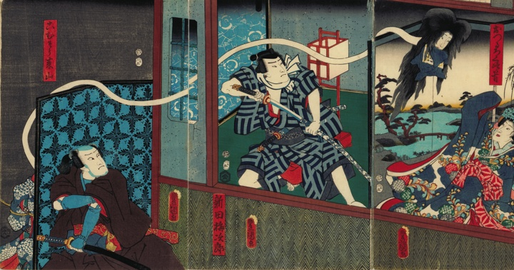

ろくろ首；ロクロクビ

おつるという女性のろくろ首。髪が長く、風呂敷を咥えている。屏風の後ろから伸びた首が現れ、弥生ひめを驚かせている。
著作者：歌川国貞（豊国）／出典：親書誌：U426_nichibunken_0471：[重扇寿松若]；カサネオウギ チヨノマツワカ／日付：2025／資源識別子：U426_nichibunken_0471_0001_0000
Copyright (c)2010- International Research Center for Japanese Studies, Kyoto, Japan. All rights reserved.